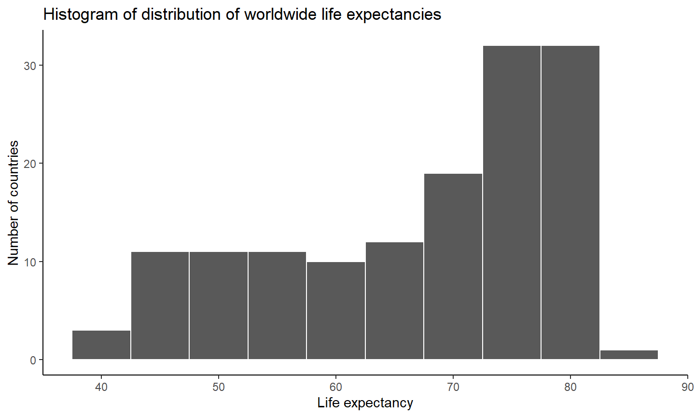
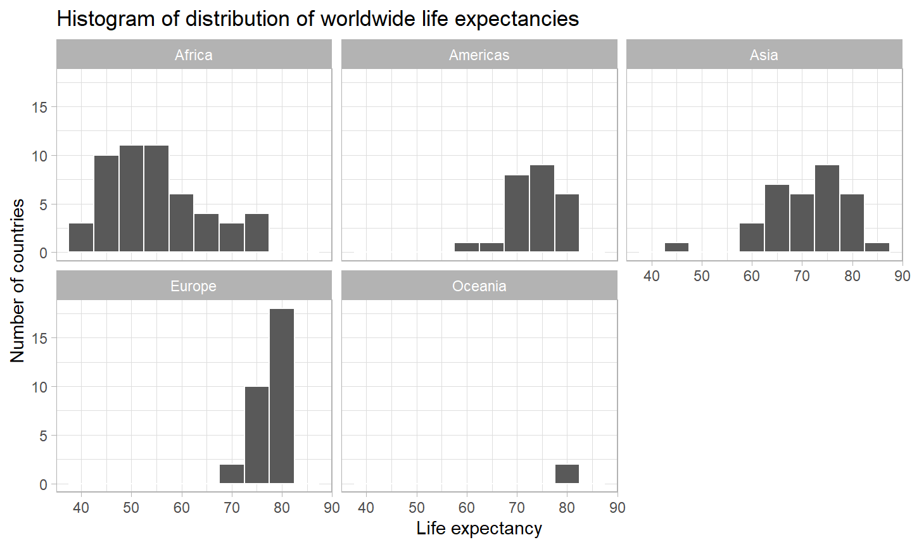
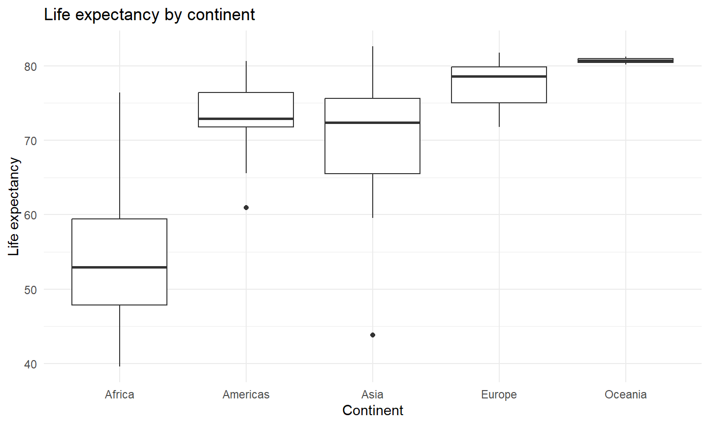

17-10-2023
Recap of Last Week
Recap Lecture 6
- Introduction into Data Modelling
- Simple Linear Regression
- Assumptions of Linear Regressions
- Correlation versus Causation
Outline of Lecture 7
Outline of Lecture 7
- Categorical Variable Linear Regression
- Multiple Regression
- Logit
Steps of Data Analysis

Categorical Variable Linear Regression
Load Data
# Load data library(gapminder) # Explore data glimpse(gapminder)
## Rows: 1,704 ## Columns: 6 ## $ country <fct> "Afghanistan", "Afghanistan", "Afghanistan", "Afghanistan", … ## $ continent <fct> Asia, Asia, Asia, Asia, Asia, Asia, Asia, Asia, Asia, Asia, … ## $ year <int> 1952, 1957, 1962, 1967, 1972, 1977, 1982, 1987, 1992, 1997, … ## $ lifeExp <dbl> 28.801, 30.332, 31.997, 34.020, 36.088, 38.438, 39.854, 40.8… ## $ pop <int> 8425333, 9240934, 10267083, 11537966, 13079460, 14880372, 12… ## $ gdpPercap <dbl> 779.4453, 820.8530, 853.1007, 836.1971, 739.9811, 786.1134, …
Select 2007
gapminder2007 <- gapminder %>% filter(year == 2007) %>% select(country, lifeExp, continent, gdpPercap) head(gapminder2007, 5)
## # A tibble: 5 × 4 ## country lifeExp continent gdpPercap ## <fct> <dbl> <fct> <dbl> ## 1 Afghanistan 43.8 Asia 975. ## 2 Albania 76.4 Europe 5937. ## 3 Algeria 72.3 Africa 6223. ## 4 Angola 42.7 Africa 4797. ## 5 Argentina 75.3 Americas 12779.
Visualize - Histogram
histogram <- ggplot(gapminder2007, aes(x = lifeExp)) +
geom_histogram(binwidth = 5, color = "white") +
labs(x = "Life expectancy", y = "Number of countries",
title = "Histogram of distribution of worldwide life expectancies") +
theme_classic()
Visualize - Histogram
histogram

Histogram per Continent
histogram_continent <- ggplot(gapminder2007, aes(x = lifeExp)) +
geom_histogram(binwidth = 5, color = "white") +
labs(x = "Life expectancy",
y = "Number of countries",
title = "Histogram of distribution of worldwide life expectancies") +
theme_light() +
facet_wrap(~ continent, nrow = 2)
Histogram per Continent
histogram_continent

Boxplot per Continent
boxplot_continent <- ggplot(gapminder2007, aes(x = continent, y = lifeExp)) +
geom_boxplot() +
labs(x = "Continent", y = "Life expectancy",
title = "Life expectancy by continent") +
theme_minimal()
Boxplot per Continent
boxplot_continent

Exploratory Data Analysis
lifeExp_by_continent <- gapminder2007 %>%
group_by(continent) %>%
summarize(median = median(lifeExp),
mean = mean(lifeExp))
lifeExp_by_continent
## # A tibble: 5 × 3 ## continent median mean ## <fct> <dbl> <dbl> ## 1 Africa 52.9 54.8 ## 2 Americas 72.9 73.6 ## 3 Asia 72.4 70.7 ## 4 Europe 78.6 77.6 ## 5 Oceania 80.7 80.7
Linear Regression
lifeExp_model <- lm(lifeExp ~ continent, data = gapminder2007) summary(lifeExp_model)
## ## Call: ## lm(formula = lifeExp ~ continent, data = gapminder2007) ## ## Residuals: ## Min 1Q Median 3Q Max ## -26.9005 -4.0399 0.2565 3.3840 21.6360 ## ## Coefficients: ## Estimate Std. Error t value Pr(>|t|) ## (Intercept) 54.806 1.025 53.446 < 2e-16 *** ## continentAmericas 18.802 1.800 10.448 < 2e-16 *** ## continentAsia 15.922 1.646 9.675 < 2e-16 *** ## continentEurope 22.843 1.695 13.474 < 2e-16 *** ## continentOceania 25.913 5.328 4.863 3.12e-06 *** ## --- ## Signif. codes: 0 '***' 0.001 '**' 0.01 '*' 0.05 '.' 0.1 ' ' 1 ## ## Residual standard error: 7.395 on 137 degrees of freedom ## Multiple R-squared: 0.6355, Adjusted R-squared: 0.6249 ## F-statistic: 59.71 on 4 and 137 DF, p-value: < 2.2e-16
Regression Table
get_regression_table(lifeExp_model)
## # A tibble: 5 × 7 ## term estimate std_error statistic p_value lower_ci upper_ci ## <chr> <dbl> <dbl> <dbl> <dbl> <dbl> <dbl> ## 1 intercept 54.8 1.02 53.4 0 52.8 56.8 ## 2 continent: Americas 18.8 1.8 10.4 0 15.2 22.4 ## 3 continent: Asia 15.9 1.65 9.68 0 12.7 19.2 ## 4 continent: Europe 22.8 1.70 13.5 0 19.5 26.2 ## 5 continent: Oceania 25.9 5.33 4.86 0 15.4 36.4
Fitted Values and Residuals
regression_points <- get_regression_points(lifeExp_model, ID = "country") head(regression_points, 5)
## # A tibble: 5 × 5 ## country lifeExp continent lifeExp_hat residual ## <fct> <dbl> <fct> <dbl> <dbl> ## 1 Afghanistan 43.8 Asia 70.7 -26.9 ## 2 Albania 76.4 Europe 77.6 -1.23 ## 3 Algeria 72.3 Africa 54.8 17.5 ## 4 Angola 42.7 Africa 54.8 -12.1 ## 5 Argentina 75.3 Americas 73.6 1.71